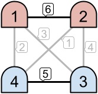
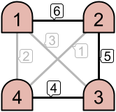
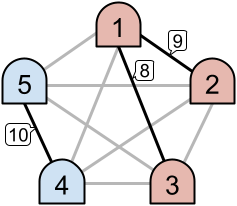

Apricot Rules LLC is developing a new simplified networking protocol and wants to show off their routing algorithm. In their design, a network consists of $$$\mathbf{M}$$$ machines numbered from $$$1$$$ to $$$\mathbf{M}$$$, and each pair of machines is connected by a direct link. Each of the links is given a unique integer priority value between $$$1$$$ and $$$(\mathbf{M} \times (\mathbf{M} - 1) / 2)$$$ and each machine routes traffic according to those priorities.
Unfortunately, the routing algorithm is too aggressive and will route all traffic from a machine through the highest priority link connected to it. This may make some groups of machines isolated from others.
Formally, we say that a machine $$$m$$$ uses a link $$$\ell$$$ if (and only if) $$$\ell$$$ is the highest priority link connected to $$$m$$$. We also say that a link is active if it is used by at least one of the two machines it connects. Given the link priorities, the original network becomes partitioned into disjoint intranets. Two machines belong to the same intranet if and only if there is some path between them using only active links.
 
For example, as seen in the left image above, only the links with priorities $$$6$$$ and $$$5$$$ are active. This creates two disjoint intranets. However, in the example on the right, three links are active, which results in one intranet consisting of all $$$4$$$ machines.
As part of the quality assurance team at Apricot Rules LLC, you are investigating the extent of the problem. You are interested in knowing the probability of there being exactly $$$\mathbf{K}$$$ intranets if the priorities are assigned uniformly at random from among the $$$(\mathbf{M} \times (\mathbf{M} - 1) / 2)!$$$ ways of doing so.
The first line of the input gives the number of test cases, $$$\mathbf{T}$$$. $$$\mathbf{T}$$$ test cases follow. Each test case is described in a single line containing two integers $$$\mathbf{M}$$$ and $$$\mathbf{K}$$$: the number of machines and the target number of intranets, respectively.
For each test case, output one line containing Case #$$$x$$$: $$$y$$$,
where $$$x$$$ is the test case number (starting from 1) and $$$y$$$ is the sought probability
computed modulo the prime $$$10^9+7$$$ ($$$1000000007$$$), which is defined precisely as follows.
Represent the probability as as an irreducible fraction $$$p/q$$$ (with $$$p$$$ and $$$q$$$ being
non-negative integers that minimize $$$p+q$$$). Then, $$$y$$$ must equal
$$$p \cdot q^{-1} \bmod {10^9+7}$$$, where $$$q^{-1}$$$ is the
modular multiplicative inverse
of $$$q$$$ with respect to the modulus $$$10^9+7$$$. It can be shown that under the constraints of
this problem, such a number $$$y$$$ always exists and is unique.
Memory limit: 1 GB.
$$$1 \le \mathbf{T} \le 50$$$.
$$$1 \le \mathbf{K} \le \mathbf{M} / 2$$$.
Time limit: 20 seconds.
$$$2 \le \mathbf{M} \le 50$$$.
Time limit: 60 seconds.
$$$2 \le \mathbf{M} \le 5 \times 10^5$$$.
3 5 2 5 1 6 3
Case #1: 428571432 Case #2: 571428576 Case #3: 47619048
In Sample Case #1, consider the following situation. Let's call $$$\mathbf{M} = 5$$$ machines $$$1, 2, 3, 4, 5$$$ and denote the link connecting machine $$$a$$$ and machine $$$b$$$ by $$$(a, b)$$$. Assume that the priorities of links $$$(1, 2), (1, 3), (1, 4), (1, 5), (2, 3), (2, 4), (2, 5), (3, 4), (3, 5), (4, 5)$$$ are $$$9, 8, 7, 6, 5, 4, 3, 2, 1, 10$$$, respectively. Then machines $$$1$$$ and $$$2$$$ use link $$$(1, 2)$$$, machine $$$3$$$ uses link $$$(1, 3)$$$, and machines $$$4$$$ and $$$5$$$ use link $$$(4, 5)$$$. Thus three links $$$(1, 2), (1, 3), (4, 5)$$$ are active, and there are two intranets $$$\{1, 2, 3\}$$$ and $$$\{4, 5\}$$$. Since $$$\mathbf{K} = 2$$$, this situation counts the answer.

We can find that there are $$$1555200$$$ ways to assign the priorities to have exactly $$$2$$$ intranets among $$$10! = 3628800$$$ ways, so the probability is $$$3/7$$$.
In Sample Case #2, the probability is $$$4/7$$$.
In Sample Case #3, the probability is $$$1/21$$$.